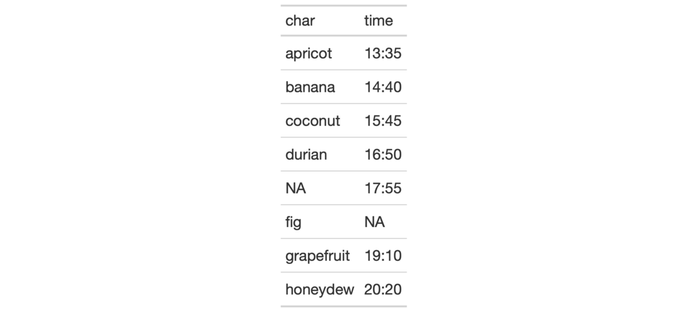

| default_fonts {gt} | R Documentation |
The vector of fonts given by default_fonts() should be used with a gt
table that is rendered to HTML. We can specify additional fonts to use but
this default set should be placed after that to act as fallbacks. This is
useful when specifying font values in the cell_text() function (itself
used in the tab_style() function). If using opt_table_font() (which also
has a font argument) we probably don't need to specify this vector of fonts
since it is handled by its add option (which is TRUE by default).
default_fonts()
A character vector of font names.

7-23
Other Helper Functions:
adjust_luminance(),
cell_borders(),
cell_fill(),
cell_text(),
cells_body(),
cells_column_labels(),
cells_column_spanners(),
cells_footnotes(),
cells_grand_summary(),
cells_row_groups(),
cells_source_notes(),
cells_stub_grand_summary(),
cells_stub_summary(),
cells_stubhead(),
cells_stub(),
cells_summary(),
cells_title(),
currency(),
escape_latex(),
google_font(),
gt_latex_dependencies(),
html(),
md(),
pct(),
px(),
random_id()
# Use `exibble` to create a gt table;
# attempting to modify the fonts used
# for the `time` column is much safer
# if `default_fonts()` is appended to
# the end of the `font` listing in the
# `cell_text()` call (the "Comic Sansa"
# and "Menloa" fonts don't exist, but,
# we'll get the first available font
# from the `default_fonts()` set)
tab_1 <-
exibble %>%
dplyr::select(char, time) %>%
gt() %>%
tab_style(
style = cell_text(
font = c(
"Comic Sansa", "Menloa",
default_fonts()
)
),
locations = cells_body(columns = time)
)